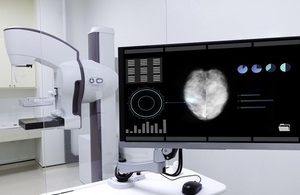

Abstract
- One-paragraph summary of the problem, dataset, methodology, and main findings.
- One-paragraph summary of the problem, dataset, approach, and key results.
1. Introduction
1.1 Background & Motivation
- Describe the clinical and societal significance of early breast cancer detection.
- Mention the NHS 2025 initiative and how AI fits into screening.

According to recent research1, neural networks outperform …
1.2 Objectives
- Apply deep learning (CNNs) to mammography image classification.
- Evaluate performance vs. traditional methods/radiologists.
1.3 Scope
Briefly note focus on classification (benign vs malignant), dataset used, and evaluation metrics.
Background & Motivation
- Significance of early breast cancer detection.
- NHS 2025 initiative on DL for screening.
Project Objectives
- Build and evaluate CNN models using the DDSM/CBIS-DDSM dataset.
- Assess whether CNNs can match or exceed radiologist performance.
Scope
- Focus on classification (benign vs. malignant), with optional segmentation.
- Use curated public data for transparency and reproducibility.
2. Dataset
2.1 Dataset Description
- Dataset: CBIS-DDSM
- Number of cases: 753 calcifications, 891 masses
- Modalities: Mammograms with labels and ROI masks
2.2 Preprocessing
- Resizing, normalization, augmentation
- ROI extraction (if applied)
2.3 Splitting Strategy
- Training, validation, and test set proportions
- Use of predefined splits if applicable
Dataset Description
- Use of CBIS-DDSM1,2 — curated version of DDSM.
- Number of images, classes (benign/malignant), calcifications vs. masses.
Preprocessing Steps
- ROI extraction, resizing, normalization.
- Augmentation techniques (flipping, rotation, etc.).
Train/Validation/Test Split
- Based on BI-RADS or predefined splits from the dataset.
3. Deep Learning Workflow
3.1 Problem Definition
Define input/output: - Input: X-ray mammogram or ROI - Output: Binary label (benign or malignant)
Define the supervised classification task: - Input: X-ray mammogram image (ROI or full view) - Output: Binary label (benign/malignant)
3.2 Data Preparation
- Preprocessing steps
- Denoising, rescaling, grayscale conversion
- Normalization [e.g., pixel range 0–1 or mean/std]
- Label encoding
- Data augmentation techniques: flips, rotations, zooms
3.3 Model Building
- Baseline model: custom CNN
- Advanced models:
- Transfer learning (e.g., VGG16, ResNet50)
- Optional segmentation with U-Net
3.4 Model Training
- Loss function: Binary Crossentropy
- Optimizer: Adam
- Metrics: Accuracy, AUC, Sensitivity, Specificity, F1-score
- Epochs, batch size, learning rate, early stopping, callbacks (e.g., early stopping, LR scheduler)
3.5 Evaluation
- Report performance on test set
- Confusion matrix
- ROC curve, AUC
- Precision, Recall, F1-score
3.6 Model Improvement
Regularization techniques: dropout, L2
Data augmentation experiments
Architecture tuning: more layers, batch norm
Transfer learning comparisons
Add dropout / L2 regularization
Increase network depth
Apply transfer learning
Tune hyperparameters
4. Results
- Performance Tables: Accuracy, AUC, Sensitivity, Specificity per model
- Visualizations: ROC curve, training/validation loss curves
- Error Analysis: Misclassified cases, confusion matrix
- Example visualizations of predictions (e.g., Grad-CAM)
5. Discussion
- Compare results with literature benchmarks
- Comparison with Radiologists (Wang 2024)
- Strengths and limitations of the model/approach
- Interpretability & practical deployment considerations
- Grad-CAM (optional)
6. Conclusion
- Summary of findings
- Implications for clinical use: Whether deep learning improves screening performance
- Suggestions for future work: Recommendations for future research (ensemble models, multi-task learning)
Appendix
A. Code Snippets
- Add code snippets here later
B. Hyperparameter Table
- Add hyperparameter tables
C. Full Model Architecture
- Add full model architecture
D. Data Statistics
- Add any dataset distribution histograms or BI-RADS label breakdowns
E. Report Writing Tools
The writing process for this report was conducted using Quarto, a modern scientific and technical publishing system that integrates Markdown, LaTeX, and executable code within a single framework. The project uses the manuscript type configuration to generate both PDF (via XeLaTeX) and HTML outputs with consistent styling, numbered sections, and title-cased tables of contents. The directory follows a modular structure (_quarto.yml, report.qmd), with customizations for fonts, TOC titles, and citation formatting via .bib and .csl files. Version control was managed using Git and GitHub, enabling reproducible and collaborative manuscript development. Integrated with VSCode and Zotero (via Better BibTeX), this setup provides a complete academic writing workflow—featuring live previews, citation support, and source-controlled outputs—crucial for high-quality, reproducible scientific communication.